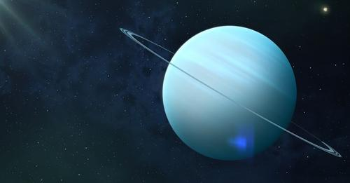

Lesson 16
Lesson 17
Lesson 18
Lesson 19
Lesson 20
Lesson 21
Lesson 22
Lesson 23
Lesson 24
Lesson 25
Lesson 26
Lesson 27
Lesson 28
Lesson 29
Lesson 30
Lesson 31

Uranus
Uranus with its rings
Solar System Distances
Uranus's six largest moons (left to right): Puck, Miranda, Ariel, Umbriel, Titania and Oberon
 Uranus with its rings
Uranus with its rings
 Solar System Distances
Solar System Distances
 Uranus's six largest moons (left to right): Puck, Miranda, Ariel, Umbriel, Titania and Oberon
Uranus's six largest moons (left to right): Puck, Miranda, Ariel, Umbriel, Titania and Oberon